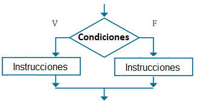
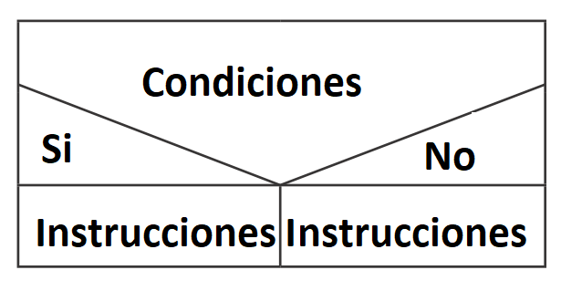

Las estructuras condicionales dobles permiten elegir entre dos opciones o alternativas posibles en función del cumplimiento o no de una determinada condición. Se utiliza en el caso donde se tengan alternativas para valorar si son verdaderas o falsas. La condición o condiciones valoradas en el Si de la estructura determina si es verdadera realiza las instrucciones dentro de esta estructura en caso de que sea Falsa se realizan las instrucciones colocadas en la estructura del sino.
Estructura en Pseudocodigo
Si (Condiciones) Entonces
Instrucciones
Sino
Instrucciones
Fin-si
Estructura en diagrama de flujo

Estructura de NASSI - SCHNEIDERMAN
